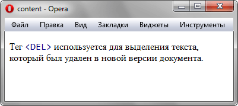

Добавляет содержимое к элементу
через псевдоэлементы ::before
и ::after.
Свойство позволяет вставлять текст,
изображения, счётчики и другие элементы
без изменения HTML-кода страницы.
Синтаксис
content: строка | attr(параметр) |
open-quote | close-quote |
no-open-quote | no-close-quote |
url | counter | normal |
none | inherit
Строка
Текст, который добавляется на веб-страницу, строка при этом должна браться в двойные или одинарные кавычки. Допускается использовать юникод для вставки спецсимволов.
Текст, который добавляется на веб-страницу, строка при этом должна браться в двойные или одинарные кавычки. Допускается использовать юникод для вставки спецсимволов.
attr(параметр)
Возвращает строку, которая является значением параметра тега указанного в скобках.
Возвращает строку, которая является значением параметра тега указанного в скобках.
open-quote
Вставляет открывающую кавычку, тип которой устанавливается с помощью свойства quotes.
Вставляет открывающую кавычку, тип которой устанавливается с помощью свойства quotes.
close-quote
Вставляет закрывающую кавычку.
Вставляет закрывающую кавычку.
no-open-quote
Отменяет добавление открывающей кавычки.
Отменяет добавление открывающей кавычки.
no-close-quote
Отменяет добавление закрывающей кавычки.
Отменяет добавление закрывающей кавычки.
url
Абсолютный или относительный адрес вставляемого объекта.
Абсолютный или относительный адрес вставляемого объекта.
counter
Выводит значение счетчика, заданного свойством counter-reset.
Выводит значение счетчика, заданного свойством counter-reset.
none
Не добавляет никакое содержимое.
Не добавляет никакое содержимое.
normal
Задается как none для псевдоэлементов :before и :after.
Задается как none для псевдоэлементов :before и :after.
inherit
Наследует значение родителя.
Наследует значение родителя.
Пример 1:
<!DOCTYPE html>
<html>
<head>
<meta charset="utf-8">
<title>content</title>
<style>
del:before {
content: "<DEL> ";
color: navy;
}
</style>
</head>
<body>
Тег <del> используется
для выделения текста,
который был удален
в новой версии документа.
</body>
</html>
Результат первого примера:
